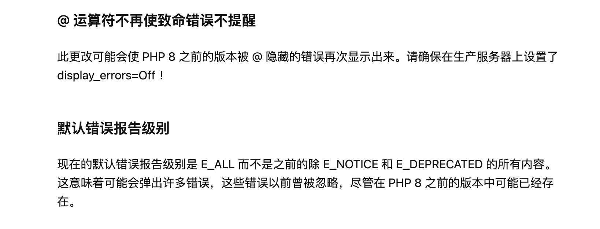

PbootCMS V3.1.6 build 2022-07-08
1、修复pdo_mysql链接报错的问题
2、自动跳转https修改为301到对应url的https
3、后台首页在线更新按钮弹窗提示，跳转到官网开发日志，以及时通知更新重点
4、带有tag分页的bug修复(感谢@cms88提供的解决方案)
5、修复站点地图读取错误的问题
因V3.1.5不再支持php7以下的版本，近几日有些用户升级到了php8，出现了兼容性问题，这里大概告知下具体情况
php8发布时间为2020年，一般来说大版本更新的头几年生产环境是不建议进行升级的，升级后也会出现各种各样的兼容性问题，只要不影响正常的开发迭代，用户无需强行升级到php8（有能力二开的除外）
php8相对php7直接影响PbootCMS的因素：

这里告知我这边的开发环境和版本，供各位用户参考：
php7.3、Mysql5.7、Nginx1.12、Alpine10.2.1(基于Docker搭建的操作系统，与市面上主流Linux差别不大)
7月12日新增
1、不存在的页面现在默认会返回404状态
2、百度富文本框禁用自动加长
3、定制标签添加和修改正则验证符合要求的格式
4、管理后台文章开内容开关刷新没有正常的设置
5、7月12日下午挂马漏洞修复
感谢夜雨轻寒提供的反馈意见邮件
上一篇：关于6月18号故障公告
下一篇：关于近期被传收购一事澄清公告